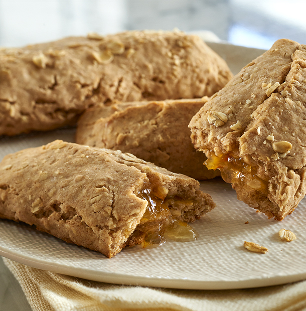

My Current Favorite Recipe
I love this recipe because it brings back memories of one of my favorite snacks as a kid. But now instead of buying cereal bars for my son, I can make them! Yum.
Cereal Bars
- 1 cup old fashioned oats
- 1 cup whole wheat flour
- 1 cup all-purpose flour
- 1/2 tsp. table salt
- 1 tsp. baking powder
- 1 egg
- 1 stick unsalted butter, melted
- 1/2 tsp. vanilla extract
- 1/2 cup honey
- 10 tbsp. desired jam for filling, or you can use apple sauce or mashed fresh berries for natural sugar
Instructions
- Chop up oats using food processor or Tupperware Power Chef
- Mix together chopped oats, flour, salt, and baking powder
- In a seperate small bowl stir together egg, melted butter, vanilla, and honey
- Mix wet ingredients into dry
- Roll out dough until 1/4 inch thick
- Using spatula or dough scraper cut rectangles out of rolled out dough, approximatley 3 1/2 inches by 4 inches
- Spread jam or other filling into center of each rectangle
- Gently fold dough over filling into thirds and gently press down ends to close bars
- Preheat oven to 350 degrees
- Bake for 15 - 18 minutes or until lightly browned.
